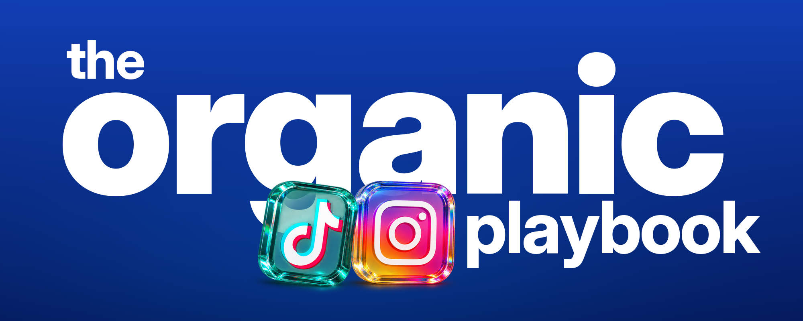
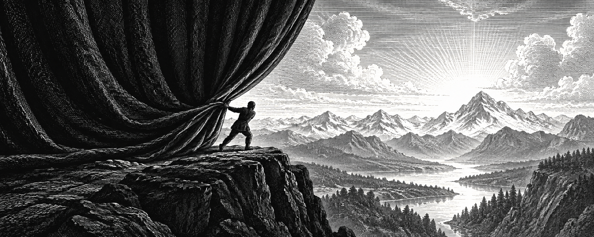
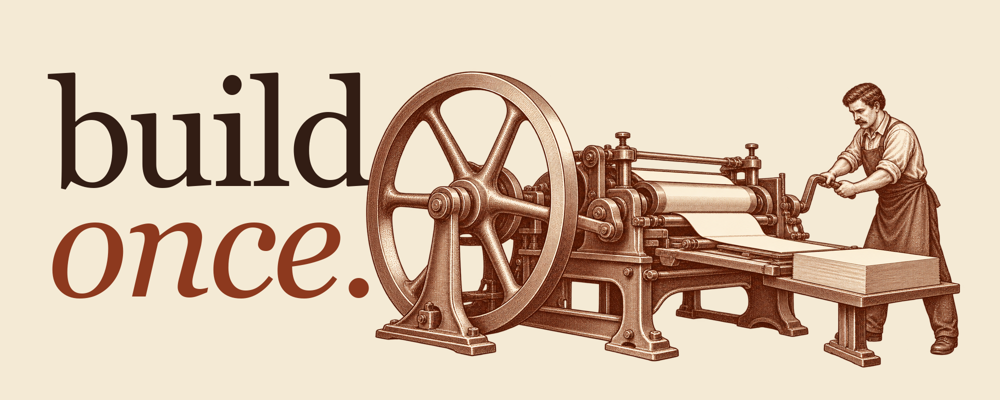
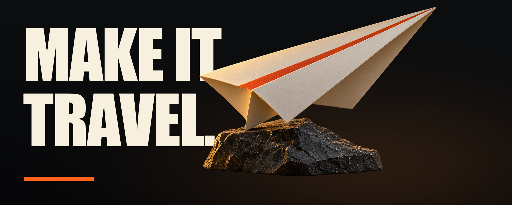
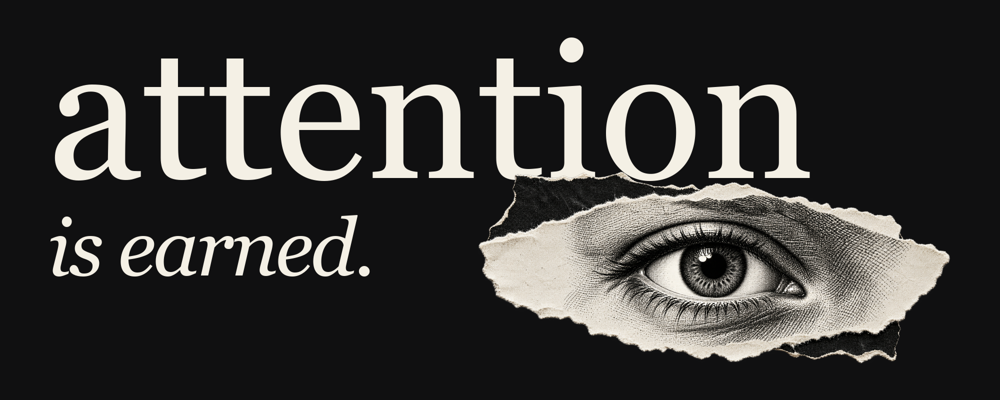
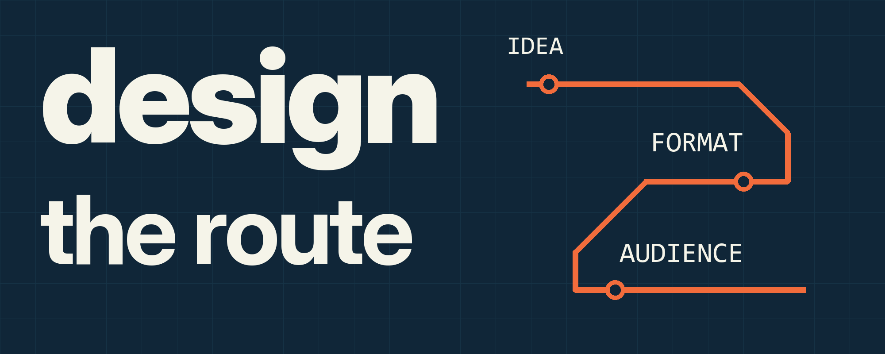

01 / Прозрачное 3D-стекло
Стекло передаёт фон через тело. Знаки сгенерированы вместе с материалом по референсу.
Оригинал и результат рядом

02 / Философская ч/б гравюра
Человек открывает занавес: видимость начинается с действия. Метафора, а не случайный фантастический пейзаж.
Оригинал и результат рядом

03 / Тёплая журнальная гравюра
Один оператор и повторяемый механизм. Бумага, рустовая краска и отдельно набранный serif.
Оригинал и результат рядом

04 / Кинематографический объект
Работа должна добраться до людей: бумажный самолёт как физическая метафора распространения.
Оригинал и результат рядом

05 / Монохромный коллаж
В центре внимания — человек. Рваная бумага, один взгляд и собранная типографика.
Оригинал и результат рядом

06 / Техническая схема
Идея → формат → аудитория. Настоящая логика маршрута вместо декоративных сетей.
Оригинал и результат рядом
Что теперь должен делать агент
Понять статью → придумать связную концепцию → показать стили с картинками → собрать текст и изображение → сравнить с оригиналом и при 340 px → исправлять конкретные дефекты до результата. Количество попыток не заменяет качество.
Для стекла проверять прозрачность тела, а не только края PNG. Для философской иллюстрации — объяснимую связь с мыслью и связность действия. Текст, числа и схема остаются точно редактируемыми.